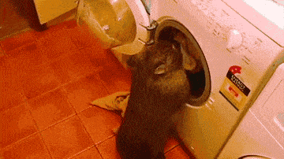
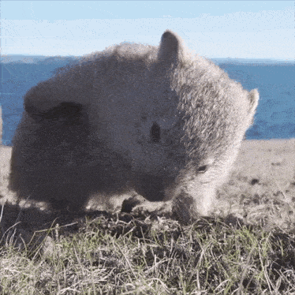
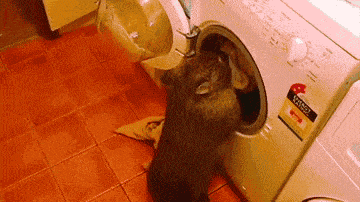
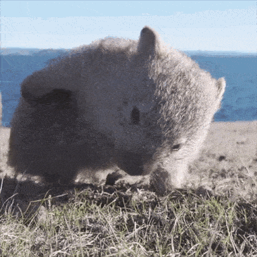
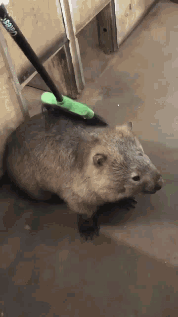
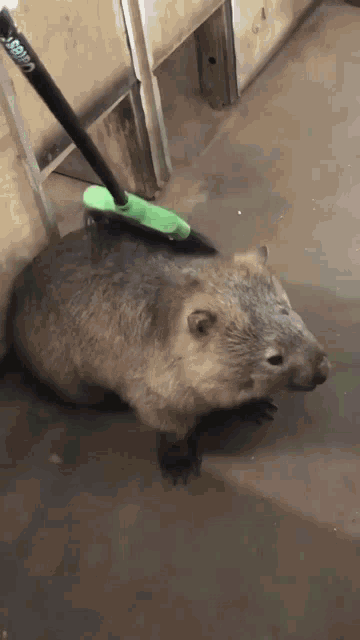

 

Vombate é um animal marsupial originário da Austrália. Os fascólomos pertencem à família Vombatidae. São quadrúpedes atarracados, com aproximadamente um metro de comprimento, com uma cauda curta e grossa. São adaptados em sua tolerância de habitat, são encontrados em áreas florestais, montanhosas e em charnecas do Sul da Austrália, incluindo a Tasmânia, bem como uma faixa isolada de cerca de 300 hectares no Parque Nacional de Epping Forest, no centro do estado australiano de Queenslândia. Os vombates são conhecidos por serem os únicos animais no mundo que produzem fezes em forma de cubo.
Disponível em: Wikipedia
 Entrar
Entrar